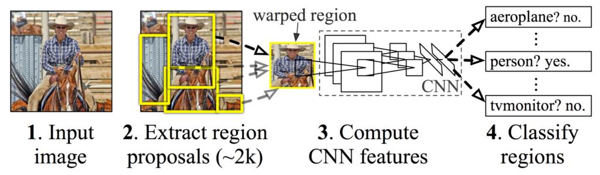
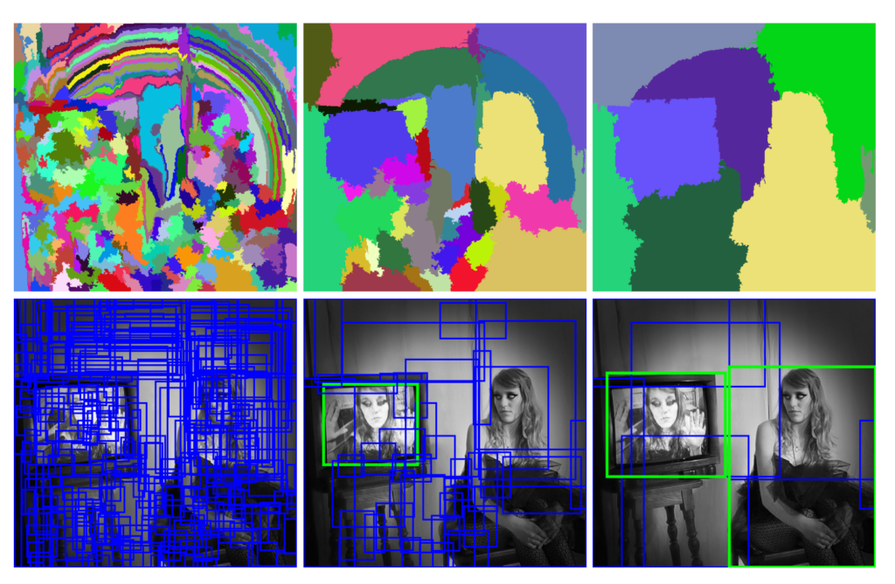
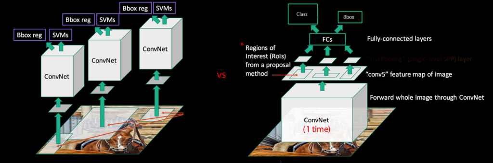

Paper Reading 2: R-CNN, Fast R-CNN, Faster R-CNN
For this week, I decided to read a trio, the trio of regional based CNNs. R-CNNs are usually used in object detection tasks. Theres also Mask R-CNN that can do segmentation but I won’t talk about that (or maybe I will).
Rich feature hierarchies for accurate object detection and semantic segmentation (2013)
This is the first paper that proposed the idea of using regional proposals with CNNs to do object detection.
The whole framework is quite interesting, and I will introduce them one by one.

Region Proposal
The first step of R-CNN is generating a bunch of region proposals for the CNN to work with. You can think of these regional proposals as rough bounding boxes made from grouping color, brightness and more. In R-CNN, they generated 2000 class-independent regional proposals, and they used a technique called selective search to generate these proposals.

CNN
Next, they feed the region proposals into a CNN, that will extract the features and send it to a SVM classifier. The CNN architecture they used is the AlexNet we’ve read last week. A problem here is at that time, there are scarce labeled object detection images to use, so they couldn’t directly train the CNN on those. The solution they found was to first train the CNN with a big dataset only with image-level annotations (so bounding box labels are not available in the dataset), then they would replace the classification layer with a random layer and fine-tune the model with a small set of labeled actual data.
Since the region proposals have various shapes, they will first also include some pixels around the region (16 in the paper), and then naively warps them into the designated shape.
They treat all region proposals with >= 0.5 IoU overlap with a ground truth box as positives for that box’s class and rest as negatives.
SVM Classifier
After producing a feature vector from the CNN, they send the vector into a SVM to classify the result of each region proposal. In this part, they treat all region proposals with full ground truth mask as positives and the rest as negatives.
After reading this, I had two big questions.
-
Why do we have different definitions for positive examples?
-
Why do we not directly use the output from the CNN, instead we chose to separately train another SVM?
They actually answered both questions in appendix B in the paper.
-
They believe the difference in how positives and negatives are defined is not fundamentally important, and rather is caused by how the fine-tuning data is limited, and they had to introduce data that prevents overfitting but also might be suboptimal.
-
They actually did try directly applying soft-max on the final layer, and the performance dropped from 54.2% to 50.9% mAP. They conjectured this as an affect of the definition of the examples, and hinted that it may be possible to not include the SVM and achieve similar results, while speeding up the whole model. (Basically they do not know why it’s worse but had to come up with an explanation for the paper XD)
Also, in the appendix they also did another bounding box regression after the SVM to further refine the bounding box.
Fast R-CNN (2015)
After reading about R-CNN, now we will look at Fast R-CNN, which aims to solve a few big problems with R-CNN.
R-CNN has three main big problems:
-
Training is a multi-stage pipeline.
-
Training is very expensive and time consuming.
-
Detection is slow, since every picture needed to be sliced with several region proposals, and run a CNN on every single one of them.
An attempt to fix this problem is SPPNet, which basically generates a huge feature map with CNN from the original image first, then do region proposals on top of it.
image comparing SPPNet and R-CNN

Now, a big problem caused by SPPNet is the inability to back propagate and update weights below the spatial pyramid pooling layer. The reasoning given in the paper is due to each RoI can have a big receptive field and making the whole process inefficient (Im not gonna lie I didn’t understand this fully).
RoI Pooling Layer
They replaced the SPP layer with a more efficient RoI pooling layer, which you can think of is a single layer version of the SPP layer.
(Note: I think RoI pooling should be worse than SPP, due to not captureing spatial relationships like SPP does, but I’m guessing they use it because of the efficiency, and it enables end-to-end back propagation training, I will need to read the SPPNet paper some day to understand more, and I will update this blog later on).
Softmax Regressor/Bounding Box Regressor
In SPPNet and Fast R-CNN, they both chose to use a softmax regressor in the end instead of the individual SVMs in the original R-CNN, which can make the speed faster. They also included the Bounding box regressor that was in the appendix of the original R-CNN.
After this I questioned: Why does the original R-CNN paper not use softmax regression for the classification step, and chose to use SVMs?
This question of comparing performance is acutally in the paper. They did test using SVM and softmax, and SVM did do a better job, but the performance increase is small, and the computation is not worth it.
Faster R-CNN: Towards Real-Time Object Detection with Region Proposal Networks (2015)
Again, Fast R-CNN is much faster compared to R-CNN, but still slow due to the need to do selective search to generate region proposals, which is quite slow in the long run.
To solve this, Faster R-CNN introduced Regional Proposal Networks (RPN), which is a fully convolutional network that predicts several proposals, and also giving them a probability of having an object and the label for it.
First, a sliding window will go through the last layer for the feature extractor, generating several n x n regions of the feature map.
In the window, they will also use several “Anchor boxes”, which are various fix-sized regions that gives a rough outline of where the object might be. One important thing to note is these anchor boxes are translation invariant, which means if you translate an object, the same function should be able to predit the same proposal in either location. This makes it really efficient as other similar methods do not have the invariance.
The regions will then be reduced dimensions, and sent to two sibling layers: one for box regression (which will also encode the coordinates of the anchor boxes), other for classification. This part is shared through every region, so it is quite efficient.
Final Words
Honestly, I was quite busy this week, and there are quite a few points I felt like I wasn’t completely sure, so I will likely go back to this and understand it further in the future.